In this short example we will use the Hierarchical Modeling of species communities (HMSC, Ovaskainen and Abrego (2020)) approach through its implementation in the HMSC-R package (Tikhonov et al. 2020) to analyze and predict the distribution of the several bird species in Finland. This is a multi-species example of HMSC - if you are interested in a single-species example see here. This post is meant to accompany the advanced methods in multivariate statistics lecture at the University of Koblenz-Landau. It will not delve deeply into the theoretical aspects of HMSC but is rather focused on the implementation in R. For more introductory material to HMSC see Ovaskainen et al. (2017), Ovaskainen and Abrego (2020), or the official website.
To run this code you will need to install the pacman R package beforehand but this will take care of all the other packages required.
if (!require(pacman)) install.packages(pacman)## Lade nötiges Paket: pacmanp_load(ape, colorspace, corrplot, data.table, dplyr, ggplot2, here, Hmsc, magrittr, stringr,vioplot)The data we use in this example can be downloaded from here. We use the Finnish bird data that are often used by the creators of HMSC to demonstrate the package (e.g. Chapter 5 in Ovaskainen and Abrego (2020) and in Tikhonov et al. (2020)).
# SPECIES AND ENVIRONMENTAL DATA
dt_y = fread(file.path(dir_data, "data.csv"))
# ENVIRONMENTAL COVARIATES
dt_x = dt_y[,c(5,6,7,8,9)]
# PHYLOGENY
ph_phylo <- read.tree(file.path(dir_data, "CTree.tre"))
# TRAITS
dt_traits = fread(file.path(dir_data, "traits.csv"))
dt_traits$LogMass = log(dt_traits$Mass)To keep the length of this analysis manageable we restrict it to the nine most common bird species plus Corvus monedula (the species we used in the single species example).
vc_subset = sort(colSums(dt_y[, 10:59]),
decreasing = TRUE)
vc_subset = names(vc_subset)[1:9]
vc_subset = append(vc_subset, "Corvus_monedula")
vc_subset = which(names(dt_y) %in% vc_subset)
dt_y = dt_y[, append(1:9, vc_subset), with = F]
ma_y = as.matrix(dt_y[, 10:19])
# trim traits
dt_traits = dt_traits[Species %in% colnames(dt_y)]Next we define the study design matrix. It is a matrix with two columns (site and year) and as many rows as there are rows in the species data.
ma_studydesign = matrix(NA, nrow(ma_y), 2)
ma_studydesign[, 1] = sprintf('Route_%.3d', dt_y$Route)
ma_studydesign[, 2] = sprintf('Year_%.3d', dt_y$Year)
df_studydesign = as.data.frame(ma_studydesign)
colnames(df_studydesign) = c("Route", "Year")
df_studydesign[, 1] = as.factor(df_studydesign[, 1])
df_studydesign[, 2] = as.factor(df_studydesign[, 2])The last thing missing before we can fit our model is the random effect structure. The random effects are the mean spatial coordinates of the sampling sites. Mean because this gives them the possibility to move between years. Obviously these shift should be small compared to the distance between sites. With the last to lines we set the minimum and maximum numbers of latent variables.
vc_routes = levels(df_studydesign[, 1])
in_nroutes = length(vc_routes)
ma_xy = matrix(0, nrow = in_nroutes, ncol = 2)
for (i in 1:in_nroutes) {
rows = df_studydesign[, 1] == vc_routes[[i]]
ma_xy[i, 1] = mean(dt_y[rows, ]$x)
ma_xy[i, 2] = mean(dt_y[rows, ]$y)
}
colnames(ma_xy) = c("x", "y")
ma_sRL = ma_xy
rownames(ma_sRL) = vc_routes
rL = HmscRandomLevel(sData = ma_sRL)
rL$nfMin = 5
rL$nfMax = 10With that done we can proceed to define out model.
m = Hmsc(
Y = ma_y,
XData = as.data.frame(dt_x),
XFormula = ~ Habitat + poly(AprMay, degree = 2, raw = TRUE),
TrData = dt_traits,
TrFormula = ~ Migration + LogMass,
phyloTree = ph_phylo,
distr = "lognormal poisson",
studyDesign = df_studydesign,
ranLevels = list(Route = rL)
)Up to there is not much different from the single-species example and the same goes for the model fitting. We need to define the parameters of Markov chains and will assess them with Gelman diagnostic (same as potential scale reduction factor). The biggest difference here will be the time it takes to fit the model.
thin = 5
samples = 1000
nChains = 4
fit_m = sampleMcmc(
m,
samples = samples,
thin = thin[i],
adaptNf = rep(ceiling(0.4 * samples * thin), 1),
transient = ceiling(0.5 * samples * thin),
nChains = nChains,
nParallel = nChains,
initPar = "fixed effects"
)
mpost = convertToCodaObject(m_fit,
spNamesNumbers = c(T, F),
covNamesNumbers = c(T, F))We could still look at trace plots but there are so many now that focusing on the Gelman diagnostic is easier here. By all means have a look at the traceplots in your own analyses! We will just skip this step here to not interrupt the document’s flow by several dozen plots.
ge.beta = gelman.diag(mpost$Beta,multivariate=FALSE)$psrf
ge.beta = data.table(o.name = rownames(ge.beta),
estimate = ge.beta[,1])
ge.beta[, species := str_remove_all(string = o.name,
pattern = "B\\[.*,")]
ge.beta[, species := str_remove_all(string = species,
pattern = "\\]")]
ge.beta[, species := str_replace_all(string = species,
pattern = "\\ ", replacement = " ")]
ge.beta %>%
ggplot(aes(y=estimate, x=1)) +
geom_dotplot(aes(fill = species),
binaxis = "y",
stackdir = "center",
position = "dodge") +
geom_hline(yintercept = 1.1)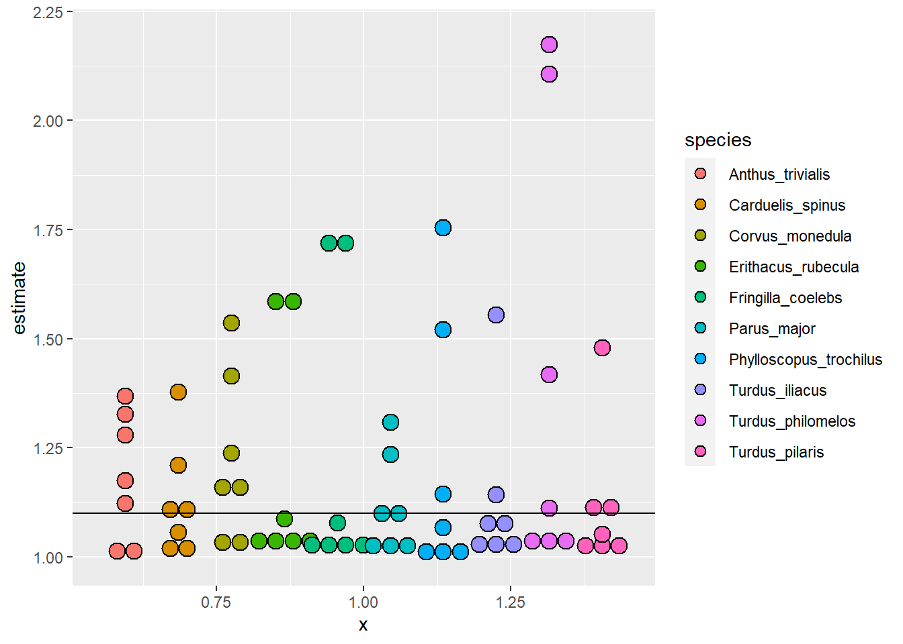 As before the estimate should be below 1.1 (black horizontal line). As we can see in the figure this is not the case for any of the species. Maybe for another parameter?
ge.gamma = gelman.diag(mpost$Gamma, multivariate = FALSE)$psrf
ge.gamma = data.table(o.name = rownames(ge.gamma),
estimate = ge.gamma[, 1])
ge.gamma[, trait := str_remove_all(string = o.name,
pattern = "G\\[.*,")]
ge.gamma[, trait := str_remove_all(string = trait,
pattern = "\\]")]
ge.gamma[, trait := str_replace_all(string = trait,
pattern = "\\ ",
replacement = " ")]
ge.gamma %>%
ggplot(aes(y = estimate, x = 1)) +
geom_dotplot(
aes(fill = trait),
binaxis = "y",
stackdir = "center",
position = "dodge"
) +
geom_hline(yintercept = 1.1)## `stat_bindot()` using `bins = 30`. Pick better value with `binwidth`.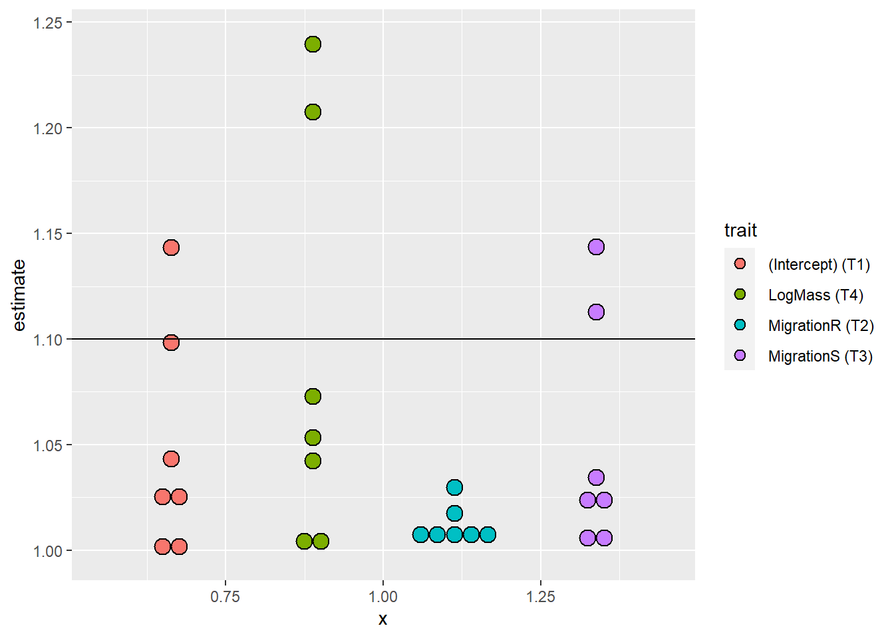 The Gelman diagnostics of the \(\gamma\) parameters are lower but still too high in some cases. If this were an analysis for a publication we should refit the model with more thinning. But for this example we will just keep going.
Lets have a look at model fit. In a multi-species context all the metrics are computed for each species separately.
predY = computePredictedValues(hM = fit_m,
expected = FALSE)
MF = evaluateModelFit(hM = fit_m, predY = predY)plot_data = data.frame (
species = str_replace(colnames(predY),
"\\_", "\\ "),
RMSE = MF$RMSE,
SR2 = MF$SR2,
O.AUC = MF$O.AUC,
O.TjurR2 = MF$O.TjurR2,
O.RMSE = MF$O.RMSE * 10,
C.SR2 = MF$C.SR2,
C.RMSE = MF$C.RMSE
)
plot_data %<>%
tidyr::pivot_longer(!species,
names_to = "statistic",
values_to = "value")
plot_data %>%
filter(str_detect(pattern = "RMSE",
string = statistic)) %>%
ggplot(aes(x = species, y = value)) +
geom_point(aes(col = species)) +
facet_wrap(. ~ statistic) +
theme(
axis.text.x = element_blank(),
axis.ticks.x = element_blank()
)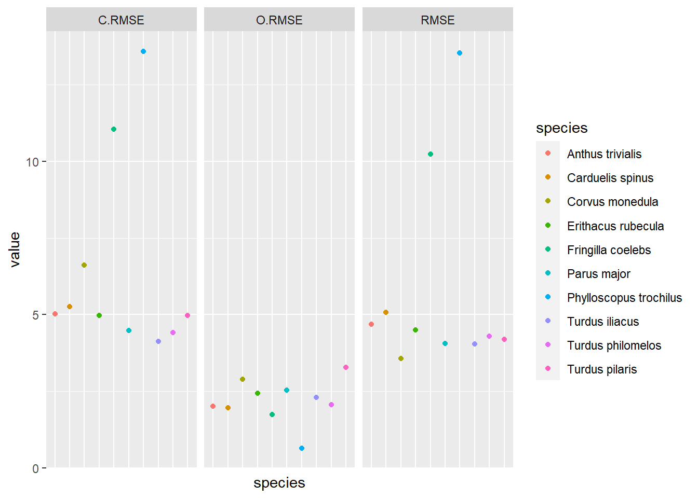
Most RMSEs and C.RMSEs lie around 5.
Notable exceptions are Parus major and Phylloscopus trochilus.
Both have mean errors above 10 (approx. 11 and 13, respectively).
The largest difference between both RMSEs is in Corvus mondedula, for which the C.RMSE is high than the RMSE.
So the error we should expect in predictions of abundance conditional on occurrence is higher than that we for predicting both occurrence and abundance.
The difference can not be explained by a low error in occurrence predictions, as this is also above average. The actual values of the RMSE to interpret without reference to the actual abundances.
An error of five individuals can be remarkable for species with small populations and close to meaningless for larger populations.
So to get a feel for the magnitude the errors we should compare them to the recorded abundances.
colnames(ma_y) %<>% str_replace("_", "\\ ")
ma_y %>%
as.data.frame %>%
mutate(site_id = 1:nrow(ma_y)) %>%
tidyr::pivot_longer(!site_id, names_to = "species", values_to = "abundance") %>%
left_join(filter(plot_data, statistic == "RMSE"), by = "species") %>%
group_by(species) %>%
mutate(mean = mean(abundance)) %>%
ggplot(aes(y = abundance, x = species)) +
stat_summary(
fun.data = "mean_sdl",
fun.args = list(mult = 1),
geom = "crossbar",
width = 0.5,
aes(col = species)
) +
geom_errorbar(aes(ymin = mean - value, ymax = mean + value),
width = .2,
position = position_dodge(0.05)) +
theme(axis.text.x = element_blank(),
axis.ticks.x = element_blank())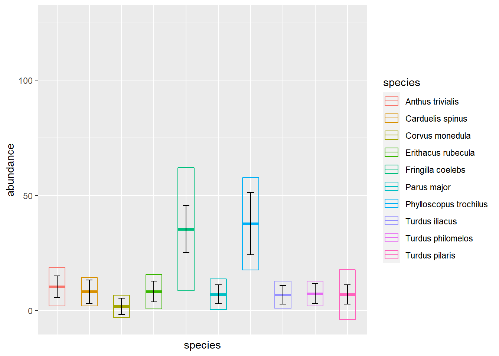 All errors are within one standard deviation of the observed values and species with higher mean abundnce have larger errors.
plot_data %>%
filter(str_detect(
pattern = "RMSE",
string = statistic,
negate = TRUE
)) %>%
ggplot(aes(x = species, y = value)) +
geom_point(aes(col = species)) +
ylim(0,1) +
facet_wrap(. ~ statistic) +
theme(axis.text.x = element_blank(),
axis.ticks.x = element_blank())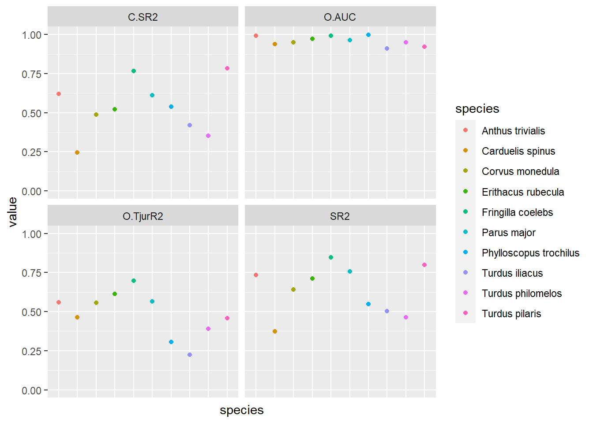
The two most abundant species also have some of the best fitting models which makes sense given that we have the most data to fit them. Overall the fit varies quite a bit between species but looks ok.
VP = computeVariancePartitioning(fit_m)
vals = VP$vals
mycols = rainbow(nrow(VP$vals))
par(mfrow=c(1,1))
plotVariancePartitioning(hM=fit_m, VP=VP,cols = mycols, args.leg=list(bg="white",cex=0.7),
main = paste0("Proportion of explained variance, ",cex.main=0.8))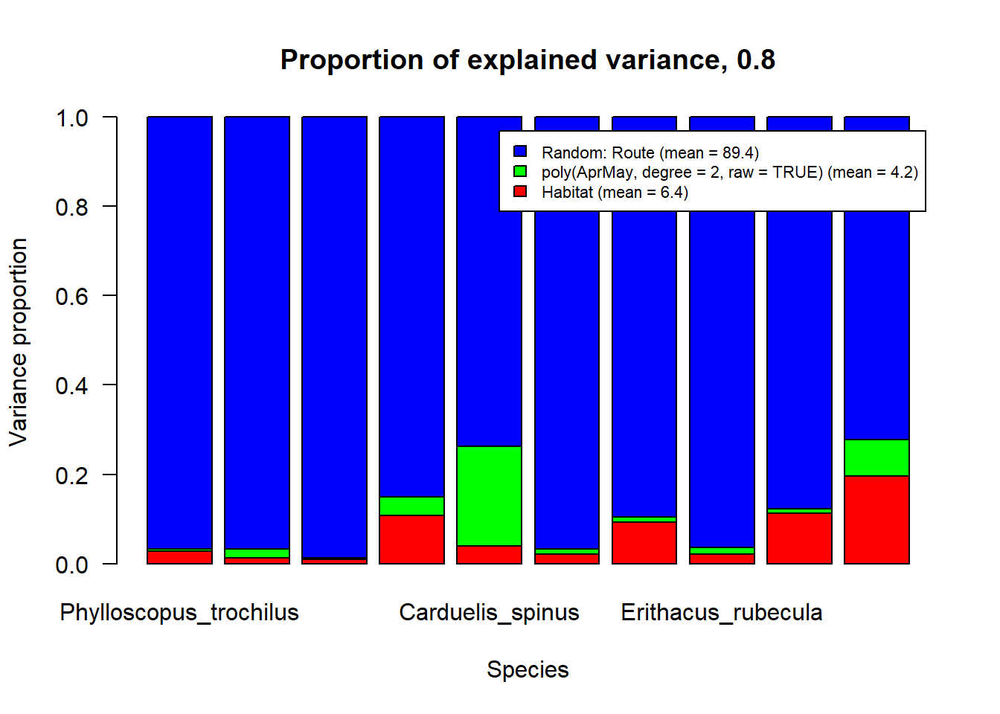
For each species most of the variance is unaccounted for (Random). There a myriad reason for variation to remain unexplained by environmental variables: missing predictors, mass effect, stochasticity, patch dynamics and species interactions are just some among them. For now let us focus on the explained variance. In most species the habitat type explains more variance than the mean temperature in in April and May. A Notable exception is Carduelis spinus.
One might be interested if the species niches (i.e. their \(\beta\)s) are phylogenetically structured. Such questions can be answered with the plot below. For the three kinds of plots that follow we always have the choice between a continuous measure (the mean) without information on uncertainty or a categorical measure (is zero included in the 95% credible interval) without detailed information on strength. We will start with the latter:
postBeta = getPostEstimate(fit_m, parName="Beta")
show.sp.names = (is.null(fit_m$phyloTree))
plotBeta(
m,
post = postBeta,
supportLevel = 0.95,
param = "Sign",
plotTree = !is.null(fit_m$phyloTree),
covNamesNumbers = c(TRUE, FALSE),
spNamesNumbers = c(TRUE, FALSE),
marTree = c(8, 0, 2, 0),
mar = c(8, 0, 2, 0)
)## [1] 0.3 1.0 0.0 1.0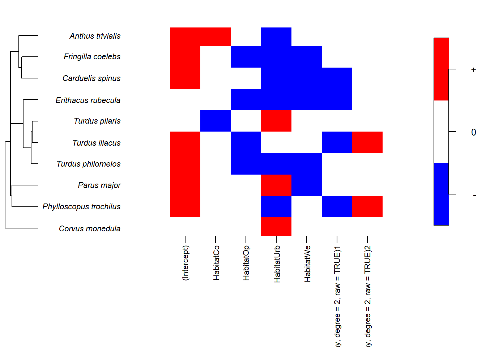
The plot can be read just like a matrix. When zero is part of the 95% credible interval the field remains white (0). If instead zero is not included then the field are red (if the estimate is positive) or blue (if the estimate is negative). I am keeping 95% for not because it is also used in other examples. On theoretical grounds there now reason not to use any other interval such as 66% or 83%. The intercept is positive which indicates that most species have higher mean abundances then the overall mean. This shows that some of the rarer species must be a lot rarer (especially C. monedula) than the others and consequently drag down the overall mean abundance. Next come the four levels of habitat type. Most species either have no or negative associations with the habitat types. Positive associations are most common with the urban habitat type (C. monedula, P. major, T. pilaris). The parameters of P. trochilus and T. iliacus for climate are noteworthy. Both show negative responses to first term, if temperatures decrease so does there abundnace. However, they have positive responses the second, quadratic, term. This is a little harder to interpret, as quadratic effects often are, but think about the opposite case for a moment: positive first term and negative second. As long as the absolute value of the first parameter is larger then that of the second this creates a unimodal response. It’s easy enough to see this in a little simulation.
x = 1:1000
y = 10 * x + -0.01 * x^2
plot(y, type = "l")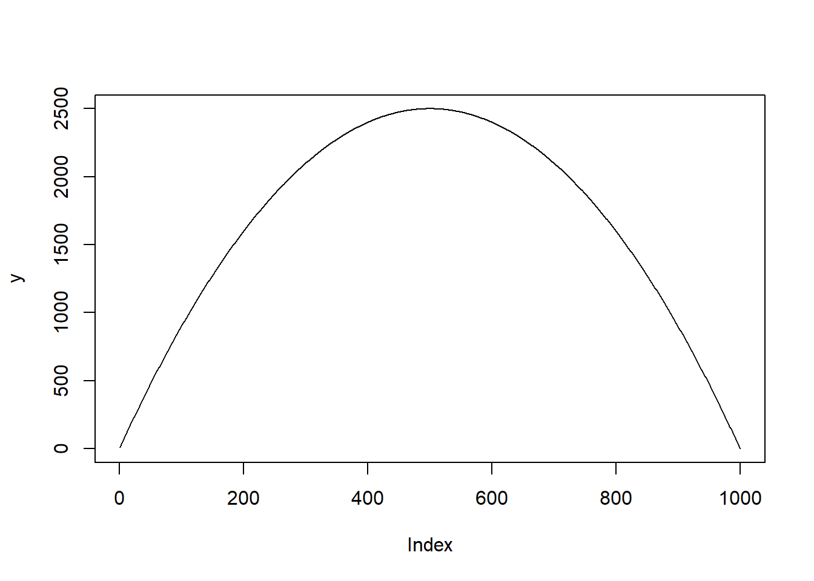
Since the signs of the parameters are the other way around in our case the unimodal response is “flipped”. First it decreases to some low point and then it increases again. However depending on the actual values of the parameters the pattern could also seem monotonically de- or increasing. We should have a look at this in the predictions.
The second plot gives some additional information.
C. monedula actually is considerably rarer than the other species.
So rare that large uncertainty remains for its intercept parameter why it is not flagged as negative in the first plot.
As expected the positive coefficient of P. trochilus and T. iliacus for the second power of climate is very small.
However this also means that the uncertainty must also be small, as zero is not included in the 95% credible interval.
plotBeta(
m,
post = postBeta,
param = "Mean",
plotTree = !is.null(fit_m$phyloTree),
covNamesNumbers = c(TRUE, FALSE),
spNamesNumbers = c(TRUE, FALSE),
marTree = c(8, 0, 2, 0),
mar = c(8, 0, 2, 0)
)## [1] 0.3 1.0 0.0 1.0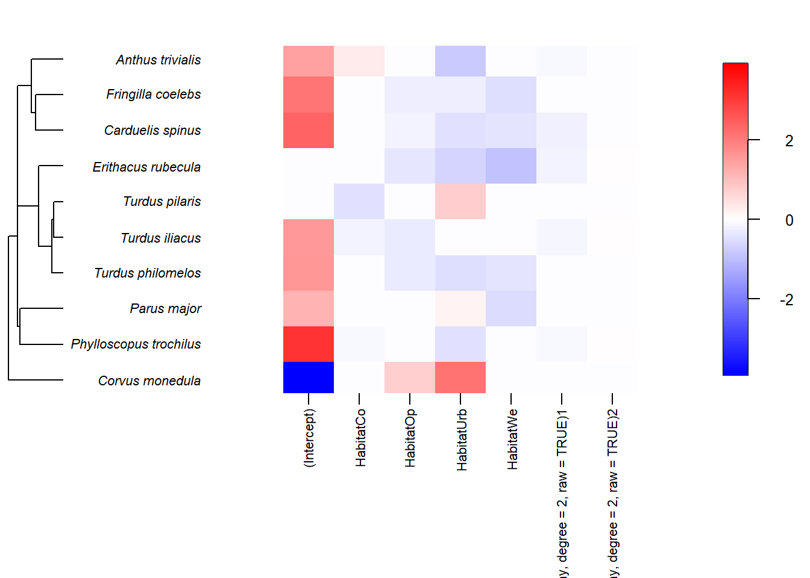
Now lets see how traits modulate the response.
postGamma = getPostEstimate(fit_m, parName="Gamma")
# categorical
plotGamma(
fit_m,
post = postGamma,
supportLevel = 0.95,
param = "Sign",
covNamesNumbers = c(TRUE, FALSE),
trNamesNumbers = c(TRUE, FALSE),
cex = c(1, 1, 1)
)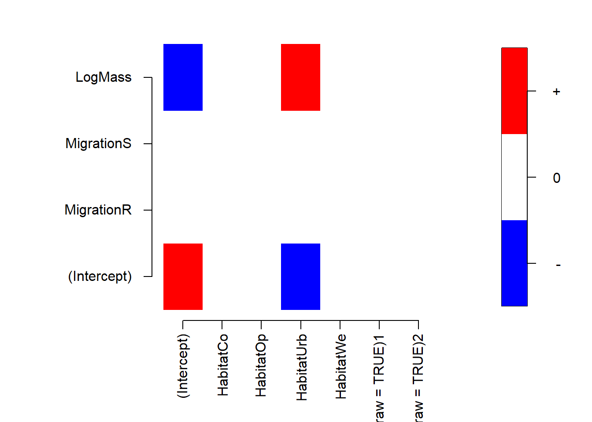 The interpretation for this plot is the same as for the one before. Again we see mostly white squares indicating that zero is part of the 95% credible interval. From this plot we can deduct: large species tend to be less abundant than smaller ones (LogMass and Intercept); birds that prefer urban habitats are less abundant and larger. The patterns don’t change when we look at the mean plot.
# continuous
plotGamma(
fit_m,
post = postGamma,
param = "Mean",
covNamesNumbers = c(TRUE, FALSE),
trNamesNumbers = c(TRUE, FALSE),
cex = c(1, 1, 1)
)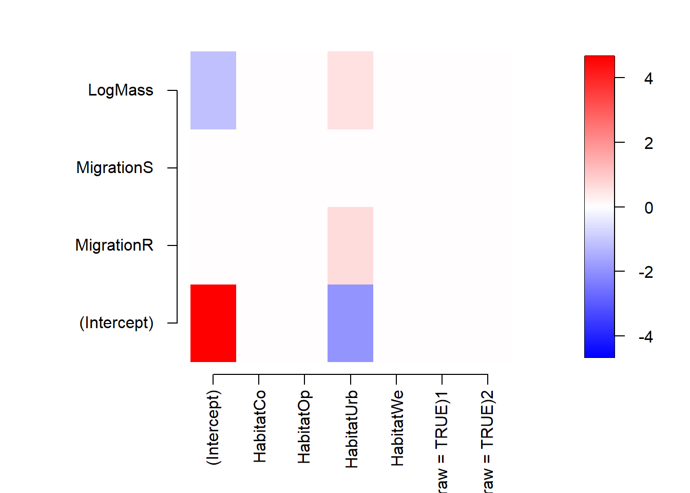
We can have a look at species co-occurrences with the Omega matrix. Again we have to choice to plot a continuous measure (mean) without information on uncertainty or a categorical measure (support) with detailed information on strength. Here again, more information is better so we plot both.
par(xpd = TRUE)
OmegaCor = computeAssociations(fit_m)
supportLevel = 0.95
plotOrder = corrMatOrder(OmegaCor[[1]]$mean, order = "AOE")
toPlot = ((OmegaCor[[1]]$support >
supportLevel) +
(OmegaCor[[1]]$support <
(1 - supportLevel)) > 0) *
sign(OmegaCor[[1]]$mean)
mymain = paste0("Associations: ",names(fit_m$ranLevels)[[1]], " - support")
corrplot(
toPlot[plotOrder, plotOrder],
method = "square",
col = colorRampPalette(c("red", "white", "blue"))(3),
mar = c(0, 0, 8, 0),
main = mymain,
cex.main = 0.8,
type = "lower",
diag = FALSE,
tl.srt = 45
)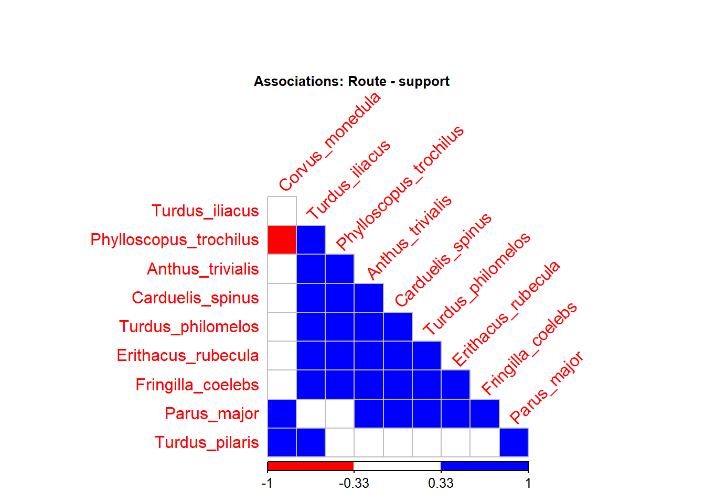 Most species associations are positive, but this might be due to some unmeasured environmental variables. The only negative association is between P. trochilus and C. monedula. We already saw before (in the phylogeny - niche plot) that the former is negatively associated with urban habitat while the latter is positively associated. What we can see in this plot however shows that these residuals of these species are even negatively correlated after accounting for the habitat.
mymain = paste0("Associations: ",names(fit_m$ranLevels)[[1]], " - mean")
corrplot(
OmegaCor[[1]]$mean,
method = "square",
#col = colorRampPalette(c("blue", "white", "red"))(3),
mar = c(0, 0, 8, 0),
main = mymain,
cex.main = 0.8,
type = "lower",
diag = FALSE,
tl.srt = 45
)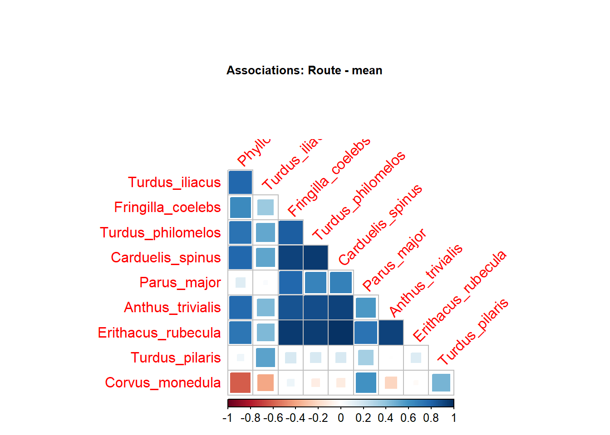
A similar picture can be seen in the second plot. The associations of C. monedula closely track the distinction between urban and non-urban bird species, with the exception of T. iliacus which is negatively associated with C. monedula (though its 95% credible interval includes zero) but unassociated with urban habitat.
Lastly we can use our model to predict
m = fit_m
covariates = all.vars(m$XFormula)
#most common species as example species
ex.sp = which.max(colMeans(m$Y, na.rm = TRUE))
m$XData$Habitat = factor(m$XData$Habitat)
Gradient = constructGradient(m,
focalVariable = "AprMay",
non.focalVariables = list(Habitat = list("3", "Urb")))
predY = predict(
m,
XData = Gradient$XDataNew,
studyDesign = Gradient$studyDesignNew,
ranLevels = Gradient$rLNew,
expected = TRUE
)par(mfrow=c(2,2))
plotGradient(
m,
Gradient,
pred = predY,
measure = "S",
las = 1,
showData = TRUE,
main = 'Species richness (measure="S")'
)## [1] 5e-04plotGradient(
m,
Gradient,
pred = predY,
measure = "Y",
index = 1,
las = 1,
showData = TRUE,
main = 'Focal species occurrence (measure="Y")'
)## [1] 0.0695plotGradient(
m,
Gradient,
pred = predY,
measure = "T",
index = 4,
las = 1,
showData = TRUE,
main = 'Mean trait value (measure="T")'
)## [1] 0.576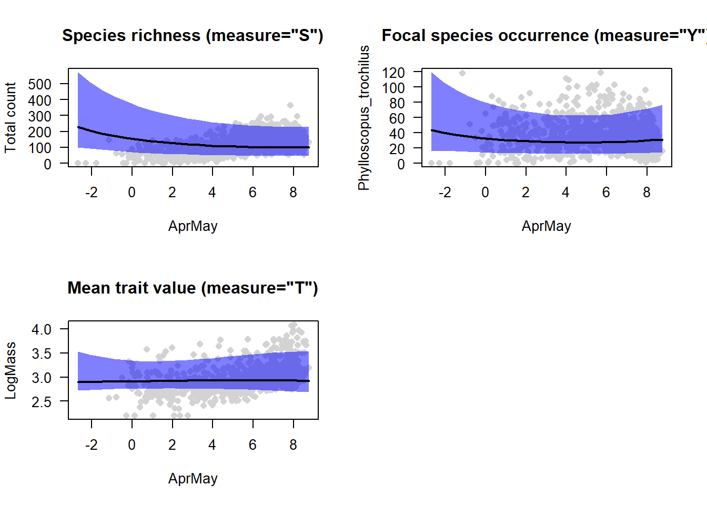
Gradient = constructGradient(m,
focalVariable = "AprMay",
non.focalVariables = list(Habitat = 1))
predY = predict(
m,
XData = Gradient$XDataNew,
studyDesign = Gradient$studyDesignNew,
ranLevels = Gradient$rLNew,
expected = TRUE
)par(mfrow=c(2,2))
plotGradient(
m,
Gradient,
pred = predY,
measure = "S",
las = 1,
showData = TRUE,
main = 'Species richness (measure="S")'
)## [1] 0plotGradient(
m,
Gradient,
pred = predY,
measure = "Y",
index = 1,
las = 1,
showData = TRUE,
main = 'Focal species occurrence (measure="Y")'
)## [1] 0.0695plotGradient(
m,
Gradient,
pred = predY,
measure = "T",
index = 4,
las = 1,
showData = TRUE,
main = 'Mean trait value (measure="T")'
)## [1] 0.4595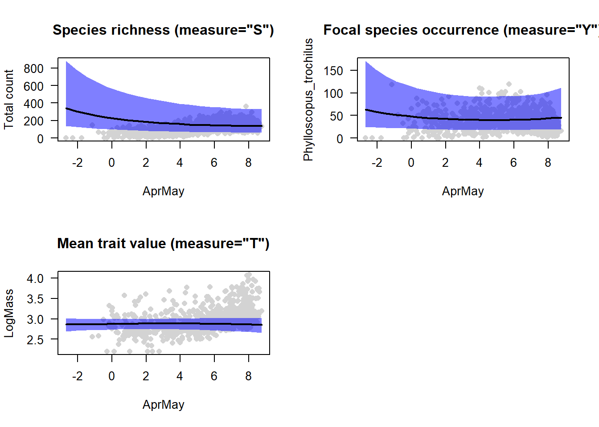
Gradient = constructGradient(m,
focalVariable = "AprMay",
non.focalVariables = list(Habitat = 2))
predY = predict(
m,
XData = Gradient$XDataNew,
studyDesign = Gradient$studyDesignNew,
ranLevels = Gradient$rLNew,
expected = TRUE
)## # weights: 15 (8 variable)
## initial value 1471.026252
## iter 10 value 1111.970675
## final value 1107.592367
## convergedpar(mfrow=c(2,2))
plotGradient(
m,
Gradient,
pred = predY,
measure = "S",
las = 1,
showData = TRUE,
main = 'Species richness (measure="S")'
)## [1] 0.001plotGradient(
m,
Gradient,
pred = predY,
measure = "Y",
index = 1,
las = 1,
showData = TRUE,
main = 'Focal species occurrence (measure="Y")'
)## [1] 0.001plotGradient(
m,
Gradient,
pred = predY,
measure = "T",
index = 4,
las = 1,
showData = TRUE,
main = 'Mean trait value (measure="T")'
)## [1] 0.82275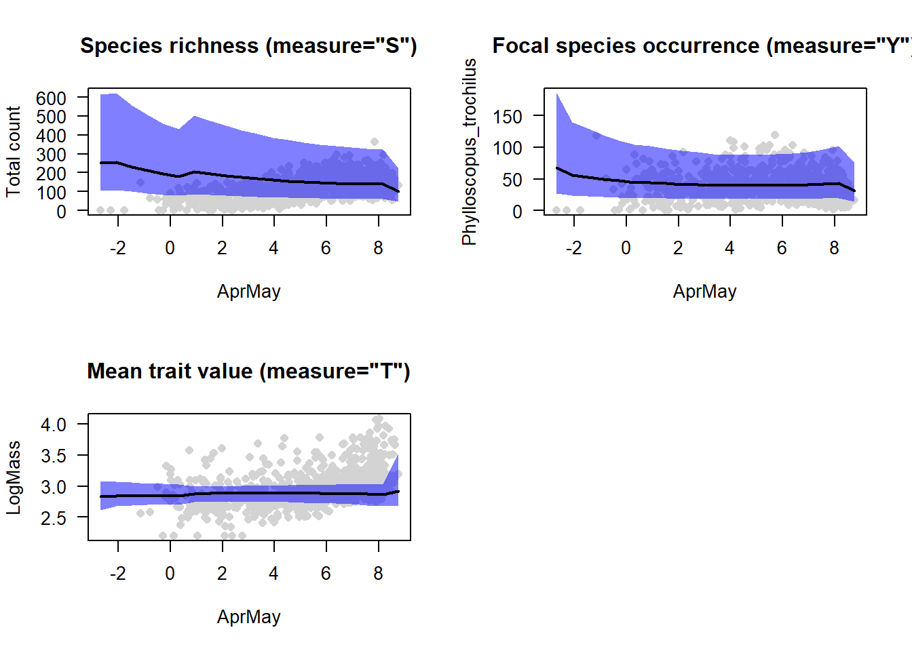
Ovaskainen, Otso, and Nerea Abrego. 2020. Joint Species Distribution Modelling: With Applications in R. Cambridge University Press.
Ovaskainen, Otso, Gleb Tikhonov, Anna Norberg, F Guillaume Blanchet, Leo Duan, David Dunson, Tomas Roslin, and Nerea Abrego. 2017. “How to Make More Out of Community Data? A Conceptual Framework and Its Implementation as Models and Software.” Ecology Letters 20 (5): 561–76.
Tikhonov, Gleb, Øystein H Opedal, Nerea Abrego, Aleksi Lehikoinen, Melinda MJ de Jonge, Jari Oksanen, and Otso Ovaskainen. 2020. “Joint Species Distribution Modelling with the R-Package Hmsc.” Methods in Ecology and Evolution 11 (3): 442–47.